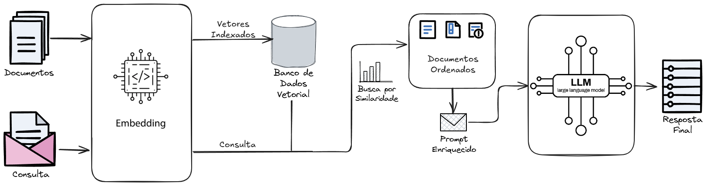
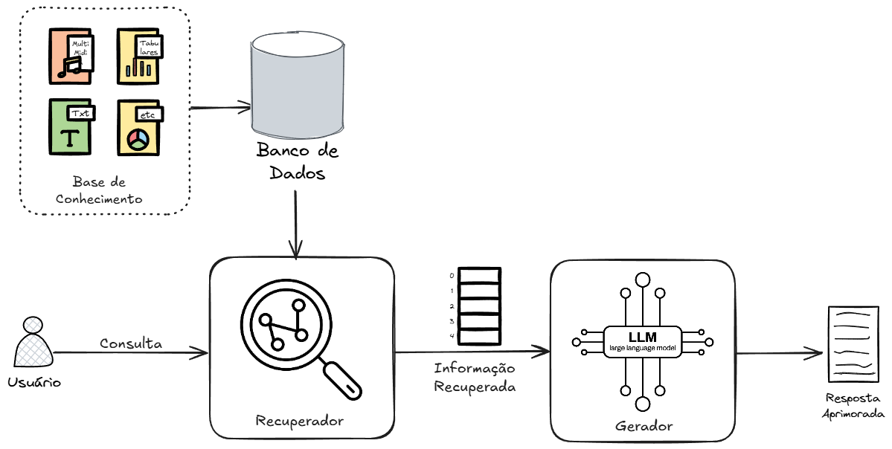

5 Geração Aumentada por Recuperação (RAG)
5.1 Fundamentos da Geração Aumentada por Recuperação
Grandes Modelos de Linguagem, ou ainda, Modelos de Linguagem de Grande Escala (LLMs), representam um marco na Inteligência Artificial, demonstrando uma capacidade sem precedentes de ‘compreender’, gerar e interagir usando a linguagem humana. No entanto, apesar de sua sofisticação, esses modelos são inerentemente limitados por sua arquitetura e pelo processo de treinamento. A Geração Aumentada por Recuperação (RAG) surge não como um aprimoramento incremental, mas um paradigma de uso dos LLMs em resposta às limitações dos modelos de fundação (foundation models)1 Para compreender a importância da RAG, é crucial primeiro dissecar os quatro principais desafios que ela se propõe a resolver:
Conhecimento Desatualizado (Knowledge Cutoff): O treinamento de um LLM é um processo computacionalmente intensivo e caro, que consome vastos recursos e tempo. Consequentemente, o conhecimento codificado em um modelo é estático e congelado no tempo, correspondendo à data em que seus dados de treinamento foram coletados. Esse “ponto de corte de conhecimento” (knowledge cutoff) significa que para dar resultados relativos a certos temas a LLM precisa de conteúdos sobre os eventos subsequentes ao seu treinamento, tornando-o inadequado para aplicações que exigem informações atuais ou em tempo real. (Cheng et al., 2024)
Alucinações: Um dos riscos mais significativos associados aos LLMs é sua tendência a “alucinar”, ou seja, gerar informações que são plausíveis, bem escritas e contextualmente adequadas, mas factualmente incorretas ou completamente fabricadas. Isso ocorre porque os LLMs são modelos probabilísticos otimizados para gerar a sequência de palavras mais provável, não a mais verdadeira. Deste modo, sem o controle necessário, os foundation models tendem a confeccionar fatos, combinar informações e apresentar referências inválidas, gerando respostas potencialmente divergentes da realidade (Kalai et al., 2025). Em domínios críticos como saúde, finanças ou direito, as alucinações representam um risco inaceitável para a confiança e a segurança do uso desses modelos. (Huang et al., 2024)
Falta de Especificidade de Domínio: LLMs de propósito geral, treinados em dados disponíveis publicamente, carecem de conhecimento profundo sobre domínios especializados ou dados proprietários de uma organização. Assim, em nível de aplicação, a especificidade de domínio é responsável por delimitar o tema, caracterizando quais detalhes são pertinentes ao contexto. Os LLMs desconhecem documentos internos, bases de dados de clientes, manuais técnicos específicos ou a terminologia de um nicho de mercado. Sem acesso a essa informação, suas respostas permanecem genéricas e de valor limitado para casos de uso empresariais.
Falta de Verificabilidade (Black Box): A natureza de “caixa-preta” dos LLMs torna extremamente difícil, se não impossível, rastrear a origem de uma informação específica gerada. Essa opacidade impede a verificação de fatos, a atribuição de fontes e a auditoria das respostas do modelo — requisitos cruciais em ambientes que exigem precisão como o acadêmico, o jornalístico e o corporativo, onde a confiabilidade e a transparência são primordiais. (Lewis et al., 2020)
5.1.1 Introdução à RAG

A Geração Aumentada por Recuperação (RAG) (Lewis et al., 2020) é um paradigma de integração entre modelos de linguagem e sistemas de recuperação de informação que aprimora a capacidade dos LLMs ao conectá-los a conteúdo externo e autoritativo antes de gerar uma resposta. Em sua essência, a RAG transforma o LLM de um sistema de “livro fechado”, que depende exclusivamente de sua memória interna (os parâmetros aprendidos durante o treinamento), para um sistema de “livro aberto”, que pode consultar fontes externas em tempo real para formular suas respostas.
Essa mudança de paradigma é sutil, mas profunda. Em vez de tentar incluir e adaptar novos conhecimentos como pesos de um modelo, algo que não garante o efetivo aprendizado de domínio, a RAG desacopla o processo de raciocínio linguístico do processo de aquisição de conhecimento. Enquanto o LLM mantém a função principal de gerar conteúdo, a tarefa de selecionar material relevante é delegada ao módulo de recuperação de informação. Deste modo, o módulo de geração compartilha a função de identificar e alinhar o contexto relevante com um módulo especializado nesta tarefa.
Esta abordagem acaba por atacar as principais limitações do uso de LLMs até então, como mostrado no Quadro 5.1.
Quadro 5.1 Limitações dos LLMs e a abordagem RAG.
A análise do termo “Retrieval-Augmented Generation” revela as três etapas sequenciais que definem seu funcionamento:
Recuperação (Retrieval): Dada uma consulta do usuário, o sistema primeiro aciona um mecanismo de busca para encontrar e extrair os trechos de informação mais relevantes de um corpus de conhecimento externo. Este corpus pode ser a internet, uma coleção de documentos proprietários, um banco de dados ou qualquer outra fonte de informação.
Aumentada (Augmentation): As informações recuperadas são então usadas para “aumentar” o prompt original do usuário. Tipicamente, o contexto recuperado é inserido, descrito e estruturtado em um template de prompt juntamente com a pergunta, fornecendo ao LLM os fatos necessários para formular uma resposta informada.
Geração (Generation): Finalmente, o prompt aumentado é enviado ao LLM. O modelo, então, sintetiza uma resposta coerente e em linguagem natural, baseando-se tanto no contexto factual recém-fornecido quanto em seu conhecimento pré-treinado sobre linguagem, estrutura e raciocínio geral.
Essa arquitetura de dois estágios (recuperação e geração) permite que os sistemas RAG produzam respostas que não são apenas fluentes e contextualmente apropriadas, mas também factualmente precisas, atualizadas e verificáveis.
Contudo, os benefícios da RAG transcendem a melhoria técnica da qualidade das respostas, oferecendo vantagens estratégicas que impulsionam sua adoção em ambientes corporativos. A arquitetura RAG permite que as organizações aproveitem o poder dos LLMs de forma mais segura, econômica e personalizada.
Melhora da Precisão e Redução de Alucinações: Ao ancorar as respostas em conteúdo recuperado, a RAG aumenta drasticamente a factualidade e mitiga o risco de o LLM gerar informações incorretas. A adoção da arquitetura torna a resposta potencialmente fundamentada em uma fonte específica, em vez de depender apenas do conhecimento parametrizado do modelo.
Acesso a Informações Atualizadas: A base de conhecimento de um sistema RAG pode ser atualizada continuamente e em tempo real. Isso permite que o LLM responda a perguntas sobre eventos recentes ou conteúdos dinâmicos, como o status de um pedido ou as últimas notícias do mercado, superando as limitações impostas pelo uso de conhecimento desatualizado (knowledge cutoff).
Confiabilidade e Verificabilidade: Como as respostas são baseadas em documentos específicos, os sistemas RAG podem facilmente citar suas fontes. Essa característica permite identificar e quantificar quais são os aspectos positivos e negativos na resposta. Assim, ao rastrear a origem da informação, a RAG aumenta a confiança do usuário e permite a auditoria e verificação dos fatos, algo essencial em aplicações que exigem segurança e responsabilidade.
Custo-Benefício: Manter um LLM atualizado através de re-treinamento ou fine-tuning contínuo é proibitivamente caro e demorado. Em contraste, atualizar o conteúdo usado em um sistema RAG é uma operação de baixo custo e alta velocidade. Isso torna a RAG uma abordagem muito mais econômica para manter o conhecimento do sistema atualizado.
Personalização e Segurança de Dados: A RAG é um método bastante adequado para adaptar LLMs a domínios específicos usando dados proprietários. As informações sensíveis de uma organização (dados de clientes, documentos internos, propriedade intelectual) permanecem em uma base de conhecimento controlada e segura, sendo acessadas apenas no momento da consulta, sem nunca serem usadas para treinar o modelo base de terceiros. Isso oferece um forte controle sobre a privacidade e a segurança dos dados, especialmente se os modelos usados forem internos.
A confluência desses benefícios estratégicos resultou em uma rápida e ampla adoção da RAG no mercado. Embora seja difícil obter uma estatística única e precisa sobre o uso da RAG, as tendências em tecnologias adjacentes e a adoção de produtos baseados em RAG pintam um quadro claro de sua importância. Por exemplo, a Databricks, que atende mais de 300 empresas da Fortune 500, lista das maiores empresas dos Estados Unidos, relatou que, em sua plataforma no último ano, houve um crescimento de 377% no uso de bancos de dados vetoriais2, um componente central da RAG que visitaremos em breve. A adoção massiva de copilotos empresariais, como o Microsoft 365 Copilot, por quase 70% das empresas da Fortune 5003, demonstra a demanda por sistemas que, como a RAG, conectam LLMs a dados corporativos internos. Esses indicadores mostram que a RAG não é uma tecnologia de nicho, mas sim um pilar fundamental da estratégia de IA gerativa em grandes empresas, impulsionada pela necessidade crítica de personalizar LLMs com dados proprietários de forma segura e econômica.
5.1.2 Arquitetura RAG

No nível mais fundamental, todos os sistemas RAG são compostos por dois pilares arquitetônicos: o Recuperador e o Gerador. A simplicidade dessa arquitetura modular é uma de suas maiores forças, permitindo que cada componente seja otimizado de forma independente.
O Recuperador (Retriever) funciona como uma máquina de busca especializada. Sua principal responsabilidade é: dada uma consulta do usuário, encontrar e retornar a informação mais relevante de uma base de conhecimento pré-indexada. O recuperador atua como um filtro de conhecimento, navegando por um vasto repositório de dados para selecionar apenas alguns elementos que são cruciais para a tarefa em questão. Portanto, a base de conhecimento pode conter uma série de fontes de informação e estas, por sua vez, podem conter milhões itens de dados, por exemplo, documentos. A eficácia de todo o sistema RAG depende criticamente da qualidade desta etapa; se o recuperador falhar em encontrar o contexto correto, o gerador não terá a informação necessária para produzir uma resposta precisa, um princípio conhecido como “garbage in garbage out”.
Já o Gerador (Generator) é tipicamente um LLM pré-treinado. Geralmente, ele recebe um template de prompt de entrada preenchido com as regras de geração de resposta, a consulta original do usuário e o contexto fornecido pelo recuperador. A sua tarefa não é simplesmente extrair ou repetir a informação recuperada, mas sim realizar uma síntese inteligente. O gerador deve integrar a intenção da pergunta do usuário com os fatos específicos do contexto, utilizando seu conhecimento linguístico e de raciocínio para gerar uma resposta final que seja coerente, relevante e em linguagem natural. A habilidade de sintetizar, contextualizar e adaptar, em vez de apenas repetir, é o que diferencia um sistema RAG sofisticado de um simples sistema de busca e extração.
5.1.3 O componente Recuperador (Retriever)
O recuperador é, em sua essência, um sistema de busca. Sua função primária é vasculhar uma base de conhecimento, que pode ser uma coleção de documentos, uma base de dados ou a web, para encontrar e extrair os trechos (chunks) de texto mais relevantes para a consulta do usuário. Embora existam diversas técnicas de recuperação, a abordagem mais comum atualmente tem um foco predominante na busca semântica, que busca por significado e contexto, em vez de simples correspondência de palavras-chave.
5.1.3.1 Etapas do processo de recuperação
O funcionamento do recuperador pode ser dividido em quatro etapas principais, que preparam e executam a busca por informações.
Indexação e Divisão (Chunking): Antes de qualquer busca, a base de conhecimento precisa ser processada. No caso de documentos, estes são divididos em pedaços menores e gerenciáveis, chamados de chunks. Essa divisão é crucial, pois permite que a busca retorne trechos específicos e de maior aderência à pergunta do usuário, em vez de documentos completos, otimizando o contexto que será enviado ao gerador.
Codificação (Embedding): Tanto a consulta do usuário quanto cada chunk de documento são transformados em uma representação vetorial numérica densa, conhecida como embedding. Esse processo é realizado por modelos de codificação (encoders) que capturam o significado semântico do documento em um espaço vetorial de alta dimensão. Tais modelos de linguagem especializados são denominados modelos de embedding.
Armazenamento: Os embeddings dos chunks são armazenados e indexados em um banco de dados vetorial (vector database). Esses bancos de dados, como FAISS, Chroma ou Pinecone, são otimizados para realizar buscas de similaridade em alta velocidade em espaços vetoriais de milhões ou bilhões de vetores.
Busca por Similaridade: Quando um usuário faz uma pergunta, o embedding da sua consulta geralmente é comparado com os embeddings dos documentos armazenados no banco de dados vetorial. O sistema então calcula a “distância” ou “proximidade” entre os vetores (usando métricas como a similaridade de cosseno) para encontrar os chunks mais similares semanticamente, que são então retornados como contexto.
5.1.3.2 Preparação de documentos e Chunking
O primeiro desafio em um pipeline RAG é lidar com o tamanho dos documentos. A maioria dos documentos do mundo real, como relatórios, artigos ou livros, excede em muito a janela de contexto dos LLMs, o número máximo de token que um modelo pode processar de uma só vez. Neste ponto, a RAG atua para evitar a adição de ruído no prompt, selecionando apenas os documentos ou trechos de documentos que são considerados relevantes a serem inseridos como contexto. Além disso, gerar um único embedding para um documento muito longo pode “diluir” a sua semântica, resultando em uma representação vetorial pouco informativa, ou uma massa gigantesca de texto que não corresponde bem ao necessário para consultas mais específicas.
A solução para este problema é a segmentação, ou chunking: o processo de dividir documentos longos em pedaços menores e mais gerenciáveis. A escolha da estratégia e do tamanho do chunk é uma das decisões de engenharia mais impactantes na qualidade de um sistema RAG. Existe um equilíbrio fundamental (Lita et al., 2024):
Chunks maiores: Capturam mais contexto semântico, preservando a relação entre parágrafos e seções. No entanto, aumentam o risco de incluir informações irrelevantes (ruído) que podem confundir o LLM e são menos precisos para consultas muito específicas.
Chunks menores: Oferecem representações mais focadas e com menos ruído, favorecendo a precisão em consultas granulares. Contudo, carregam menos contexto, o que pode dificultar a compreensão completa da informação se uma ideia estiver espalhada por múltiplos chunks.
Existem diversas estratégias de chunking, cada uma com seus próprios trade-offs (Lita et al., 2024):
Chunking fixo (Fixed-size): A abordagem mais simples, que consiste em dividir o texto em segmentos de tamanho fixo. Em geral pelo número de tokens, caracteres ou palavras, com uma sobreposição (overlap) opcional para manter a continuidade e evitar a perda de informação com os cortes. É rápido e fácil de implementar, mas pode quebrar sentenças ou ideias no meio, prejudicando a coesão semântica do conteúdo textual.
Chunking recursivo (Recursive): Uma melhoria em relação ao chunking fixo. Tenta dividir o texto recursivamente usando uma lista hierárquica de separadores, como quebras de parágrafo (\n\n), quebras de linha (\n) e espaços. Ele prioriza a manutenção da estrutura sintática do texto e só recorre a uma divisão de tamanho fixo como último recurso.
Chunking semântico (Semantic): Esta técnica visa criar chunks que são semanticamente coerentes. Uma abordagem comum é agrupar sentenças com base na similaridade de seus embeddings. O processo parte da segmentação do texto, geralmente no nível das sentenças, com o agrupamento das partições por similaridade semântica com o chunk acumulado. As partições são agrupadas de acordo com um limiar de similaridade predefinido. Isso produz trechos mais coesos, mas é computacionalmente mais caro.
Chunking baseado em estrutura (Structure-based): Aproveita a estrutura inerente do documento, como títulos, seções e subseções em arquivos HTML, Markdown ou LaTeX, para definir os limites dos chunks. Isso preserva a estrutura lógica do conteúdo, mas pode resultar em chunks de tamanho muito variável.
Chunking via LLM (Agentic Chunking): Uma abordagem de ponta que utiliza um LLM para analisar o documento e decidir inteligentemente como segmentá-lo. O LLM pode ser instruído a criar resumos de seções ou a agrupar trechos que tratam do mesmo tópico. Aqui, é importante ressaltar, que a aplicação do LLM deve ser o mais literal possível, evitando modificações do texto original e a criação de textos divergentes. Além disso, embora produza de altíssima qualidade semântica, o custo computacional e financeiro é significativamente maior, podendo ser proibitivo em alguns contextos.
5.1.3.3 Representando documentos textuais com embeddings
Após a segmentação, cada chunk de texto precisa ser convertido em uma representação numérica que um computador possa entender e comparar. Por muito tempo, a busca de informações baseou-se em correspondência de palavras-chave, usando modelos como o Bag-of-Words (BoW), que ignoram a ordem e o contexto das palavras. Essa abordagem é limitada por problemas como sinônimos (palavras diferentes com o mesmo significado) e paráfrases (frases diferentes com a mesma intenção).
Os embeddings textuais mitigam ou tratam diretamente esse problema. Um embedding é um vetor denso de números de ponto flutuante que representa o significado semântico de um pedaço de texto em um espaço de alta dimensionalidade. Esses vetores são a representação interna de um modelo de aprendizado profundo, geralmente sendo os vetores dos pesos da penúltima camada oculta (hidden layer). Portanto, esse significado semântico dos termos é dado na codificação dos documentos nos modelos de embeddings, de acordo com a proximidade e coocorrência das palavras em um determinado contexto. Nesse espaço, textos com significados semelhantes terão vetores próximos uns dos outros, medidos por métricas como a similaridade de cosseno.
Esses vetores são gerados por modelos de linguagem especializados, tipicamente arquiteturas encoder-only como BERT, RoBERTa ou, mais comumente para RAG, modelos Sentence-BERT (Reimers; Gurevych, 2019), que são otimizados para produzir embeddings de sentenças e parágrafos de alta qualidade. O processo envolve passar um chunk de texto pelo modelo encoder, que gera um embedding para cada token. Em seguida, uma técnica de pooling é aplicada para agregar esses embeddings de tokens em um único vetor que representa o chunk inteiro. As estratégias de pooling mais comuns são:
Average pooling: Calcular a média dos vetores de todos os tokens, resultando em uma representação global que suaviza as variações locais.
Max pooling: Selecionar, para cada dimensão do vetor, o valor máximo observado entre os embeddings dos tokens, destacando as características mais salientes do texto.
Token Especial: Utilizar diretamente o embedding associado ao token especial
CLS(em modelos como o BERT), que é treinado para capturar o significado agregado de toda a sequência.
Na prática e na literatura, a abordagem mais usual é fazer a média dos vetores dos tokens (Average pooling).
Uma vez que todos os chunks foram convertidos em embeddings, eles precisam ser armazenados em um local que permita uma busca rápida e eficiente. Em casos de embeddings semânticos, é usual utilizar, por exemplo, bancos de dados vetoriais, projetados para busca rápida e eficiente em bases com milhões de vetores.
Você pode se aprofundar sobre embeddings no Capítulo Modelos de linguagem deste livro.
5.1.3.4 Mecanismo de recuperação
A etapa final do processo de recuperação é a busca em si. Existem duas famílias principais de algoritmos de recuperação, e as abordagens mais modernas as combinam.
Recuperadores Esparsos (Sparse Retrievers): Estes são os algoritmos clássicos de recuperação de informação, baseados em representações vetoriais esparsas (onde a maioria dos valores é zero). Nessa estrutura vetorial, os documentos indexados são dados pelos vetores numéricos que geralmente indicam a frequência ou a frequência ponderada dos termos que os compõe. Um dos algoritmos mais proeminentes para este tipo de recuperação é o BM25. Ele funciona com base na correspondência de palavras-chave, dando maior peso a termos que são raros no corpus geral, mas frequentes em um documento específico. São excelentes para encontrar documentos que contêm palavras-chave exatas ou terminologia específica.
Recuperadores Densos (Dense Retrievers): Estes são os recuperadores baseados nos embeddings semânticos discutidos anteriormente. Eles utilizam vetores densos (onde a maioria dos valores é não-zero) que, através da ocorrência em contextos similares, capturam significado conceitual dos termos que compõe o texto. Sua principal vantagem é a capacidade de encontrar documentos relevantes mesmo que não compartilhem nenhuma palavra-chave com a consulta, contanto que o significado seja semelhante. São robustos a sinônimos, paráfrases e variações de vocabulário.
Busca Híbrida (Hybrid Search): A abordagem de estado da arte reconhece que os recuperadores esparsos e densos têm forças complementares. A busca híbrida executa ambos os tipos de busca em paralelo e, em seguida, combina os resultados. Essa combinação aproveita a precisão lexical da busca por palavras-chave e a robustez conceitual da busca semântica. Para mesclar as duas listas de resultados, que possuem pontuações em escalas diferentes, algoritmos de fusão de ranking, como o Reciprocal Rank Fusion (RRF) (Cormack et al., 2009), são frequentemente utilizados para produzir uma única lista de resultados classificada de forma mais relevante.
O Capítulo Recuperação de Informação deste livro trata com atenção mecanismos de Recuperação de Informação.
5.1.4 O componente Gerador (Generator)
O mecanismo central da RAG é a engenharia de prompt dinâmica, também conhecida como “prompt stuffing”. O sistema monta e preenche estruturas predefinidas no prompt, tornando-o mais elaborado antes do envio para a LLM. Este prompt aumentado normalmente segue um template que combina as regras de geração de resposta, a consulta original realizada pelo usuário e o contexto recuperado. Um exemplo de template poderia ser:
Quadro 5.2 Exemplo de prompt aumentado em um sistema RAG
O exemplo acima foi o prompt utilizado no LattesRex(Darcio et al., 2025), um chatbot especialista em análises de currículos Lattes4. No exemplo, podemos ver as instruções, nas quais são definidas a tarefa, a função do modelo e o que deve conter na resposta. Os documentos coletados e a consulta do usuário são descritas e inseridas ao final do mesmo. Assim, a cada consulta do usuário, o prompt é modificado dinamicamente.
Este processo de aumento garante que o LLM tenha todas as informações factuais necessárias diretamente em sua janela de contexto no momento da geração.
O principal objetivo do prompt aumentado é forçar o LLM a realizar uma “geração ancorada” (grounded generation). Ao instruir explicitamente o modelo a basear sua resposta no contexto fornecido, o risco de alucinação é drasticamente reduzido. A resposta é “ancorada” no conteúdo factual dos documentos recuperados, em vez de ser puramente uma invenção probabilística baseada no conhecimento interno do modelo.
No entanto, a função do gerador vai muito além de uma simples estruturação de informação. A verdadeira habilidade de um sistema RAG sofisticado reside na capacidade do LLM de contextualizar a informação. O modelo não deve apenas repetir os trechos recuperados. Em vez disso, ele deve executar uma fusão complexa de três fontes de informação: (1) a intenção e os detalhes da consulta do usuário, (2) os fatos específicos contidos nos chunks recuperados, e (3) seu vasto conhecimento pré-treinado sobre gramática, estrutura, raciocínio e conhecimento geral do mundo.
Considere a seguinte consulta: “Compare os prós e contras das estratégias de chunking fixo e semântico”. O recuperador pode retornar dois chunks: um descrevendo o chunking fixo e outro descrevendo o chunking semântico. O processo de geração de resposta mais simples listaria ambas as descrições como resultado. Um gerador sofisticado, no entanto, usaria sua capacidade de raciocínio para criar uma estrutura comparativa organizando os pontos fortes e fracos de cada abordagem lado a lado. Essa análise de contexto, realizando tarefas de síntese e estruturação textual, são formas de tratamento do conteúdo que apenas um LLM poderoso é capaz de executar, e é o que eleva a RAG de uma ferramenta de busca para um verdadeiro sistema de sintese de informações. Portanto, a qualidade de um sistema RAG depende não apenas da precisão do recuperador, mas também da capacidade de entendimento do contexto do gerador.
5.2 RAG vs. Fine-tuning
Ao buscar adaptar um LLM para resolver problemas específicos, duas soluções principais emergem: RAG e fine-tuning (ajuste fino). Embora possam ser usadas em conjunto, a escolha entre elas envolve um trade-off fundamental relacionado ao objetivo, custo e natureza dos dados.
5.2.1 Fine-tuning
O fine-tuning consiste em continuar o treinamento de um modelo fundacional pré-treinado, utilizando um conjunto de dados específico do seu domínio. O objetivo é ajustar os pesos internos do modelo para que ele se especialize em uma tarefa ou em um estilo de comunicação particular.
Essencialmente, o fine-tuning é ideal para ensinar ao LLM como responder, permitindo ajustar o estilo, o tom, o formato da saída e garantir que o modelo siga instruções complexas e específicas do domínio ou caso de uso. Isso se alinha a uma máxima importante na comunidade de IA: o ajuste fino serve para ensinar forma, não sendo indicado para injetar fatos ao modelo. Tentar ensinar novos conhecimentos factuais exclusivamente por este método pode levar a alucinações e não garante que o modelo recupere a informação correta no momento certo.
Deste modo, o fine-tuning não é uma opção interessante para lidar com liberdade de escrita e as veriações textuais de determinados domínios. Entretanto, tal abordagem pode ser aplicada para atuar com fatores e conhecimentos relativamente bem definido e estáticos. O conteúdo para esses casos deve sofrer poucas mudanças de acordo com o tempo pois, após o treinamento, o conhecimento do modelo fica “congelado” até um novo processo de ajuste. Assim, o sucesso do fine-tuning depende criticamente da qualidade e da curadoria do conjunto de dados de treinamento e, mesmo com técnicas de otimização como o LoRA (Low-Rank Adaptation)(Hu et al., 2021), o processo pode ser computacionalmente caro, exigindo recursos de hardware e tempo significativos.
5.2.2 RAG
Em contraste, a RAG não modifica os pesos internos do LLM. Em vez disso, ele enriquece as consultas para maximizar a qualidade dos resultados obtidos “em tempo de execução”, fornecendo-lhe informações externas relevantes para cada consulta.
A principal vantagem da RAG é sua capacidade de acessar conhecimento dinâmico. Basta atualizar a base de dados externa para que o LLM utilize as informações mais recentes, sem a necessidade de um caro e demorado re-treinamento. Ao “ancorar” a resposta do LLM em um contexto factual, a RAG reduz significativamente a probabilidade de o modelo inventar informações (alucinar).
Isso torna a RAG a abordagem ideal para domínios onde a factualidade e a auditabilidade são essenciais, como em aplicações de direito, apoio ao cliente ou análise de documentos técnicos. Como a resposta é gerada a partir de fontes explícitas, é possível citá-las, aumentando a confiança do usuário. A implementação geralmente envolve a orquestração de componentes como bancos de dados vetoriais e recuperadores, frequentemente facilitada por frameworks como LangChain ou LlamaIndex.
Em resumo, a escolha depende do problema: se o objetivo é ensinar um novo estilo ou comportamento, o fine-tuning é a ferramenta certa. Se o objetivo é garantir respostas factuais baseadas em um corpo de conhecimento dinâmico e específico, a RAG é a solução superior. Em muitos casos avançados, uma abordagem híbrida, onde um modelo fine-tuned para um determinado estilo utiliza RAG para acessar dados atualizados, pode oferecer o melhor dos dois mundos.
5.2.3 Abordagens híbridas
A discussão “RAG vs. fine-tuning” pode apresentar uma falsa dicotomia. Na prática, as arquiteturas de IA mais robustas não escolhem entre um ou outro, mas os combinam de forma sinérgica. É importante ao se aprofundar nas abordagens híbridas, entender que o refinamento das tarefas e a especialização dos prompts e modelos potencializa os resultados obtidos. Portanto, um exemplo de modelos híbridos é o uso de fine-tuning para otimizar o “motor” de raciocínio do LLM, enquanto a RAG fornece o “combustível” (dados) em tempo real. Essa combinação permite que o modelo não apenas acesse o conhecimento correto, mas também saiba como utilizá-lo da maneira mais eficaz.
Um exemplo prático seria um assistente de IA para médicos. Primeiramente, o LLM base passaria por um fine-tuning com um conjunto de prontuários médicos anonimizados e diálogos clínicos. O objetivo não seria memorizar os prontuários, mas sim aprender a estrutura da linguagem médica, entender abreviações e saber como resumir informações clínicas. Em seguida, quando um médico perguntasse “Resuma o histórico de hipertensão do paciente João Silva”, o sistema RAG entraria em ação, recuperando os trechos relevantes do prontuário eletrônico específico daquele paciente. Por fim, o LLM, já ajustado para “pensar como um médico”, receberia esse contexto e geraria um resumo conciso e clinicamente relevante.
As arquiteturas híbridas podem ser implementadas de várias maneiras, como a Sequencial (primeiro ajusta-se o modelo, depois aplica-se RAG) ou a Integrada (onde o modelo é treinado para otimizar tanto a recuperação quanto a geração), representando a vanguarda na personalização de LLMs.
5.3 RAG - Aspectos avançados
A arquitetura fundamental de RAG, que consiste em recuperar informações de uma base de conhecimento externa antes de gerar uma resposta, provou ser uma solução robusta para mitigar alucinações e superar a limitação do conhecimento estático dos modelos. No entanto, a implementação “ingênua” ou tradicional deste paradigma, caracterizada por uma busca vetorial simples seguida de uma concatenação de contexto, revela rapidamente suas próprias limitações. A qualidade da resposta final é inexoravelmente limitada pela qualidade da recuperação inicial; uma abordagem de “tamanho único” para todas as consultas é ineficiente e subótima; e o foco exclusivo em dados textuais ignora a riqueza de informações presentes em formatos estruturados e multimodais.
Nesta seção aprofundaremos o ecossistema de técnicas avançadas de RAG, que transformam o pipeline linear e passivo em um processo de raciocínio dinâmico, adaptativo e autocrítico. A tese central é que a evolução da RAG transcende a mera recuperação de informações, movendo-se em direção a um paradigma onde o sistema introduz camadas sofisticadas de otimização, tomada de decisão inteligente, autoavaliação e raciocínio estruturado. Exploraremos como o re-ranking refina a precisão, como a fusão de consultas amplia o alcance da busca e como algoritmos inteligentes podem rotear, corrigir e até mesmo habilitar a autocrítica no processo de geração. Além disso, expandiremos as fronteiras da RAG para além do texto plano, investigando como grafos de conhecimento permitem o raciocínio complexo e como a multimodalidade integra visão e linguagem. Finalmente, abordaremos os desafios práticos da implementação em produção, desde as estratégias de segmentação de dados e avaliação rigorosa até as considerações éticas e de desempenho.
5.3.1 RAG em duas etapas: Re-ordenando resultados
A arquitetura de recuperação em sistemas RAG de larga escala é frequentemente projetada como um processo de duas etapas que equilibra a necessidade de velocidade em um vasto corpus com a exigência de alta precisão em um conjunto menor de chunks ou documentos candidatos. Este paradigma representa um trade-off fundamental entre a abrangência semântica e a profundidade contextual.
A primeira etapa, a recuperação inicial, é otimizada para velocidade e escalabilidade. Seu objetivo é pesquisar rapidamente em milhões ou até bilhões de documentos para encontrar um conjunto de candidatos potencialmente relevantes. Para isso, são utilizados modelos bi-encoder. Esses modelos geram representações vetoriais (embeddings) para a consulta e para todos os documentos da base de conhecimento de forma independente e antecipada. (Khattab; Zaharia, 2020) No momento da consulta, a recuperação se resume a uma busca de vizinhos mais próximos (Approximate Nearest Neighbor - ANN) no espaço vetorial, uma operação extremamente eficiente. O bi-encoder lança uma rede ampla e rápida, maximizando o recall ao capturar todos os documentos que são semanticamente próximos da consulta em um sentido geral. No entanto, como a consulta e o documento são processados separadamente, interações mais finas e contextuais entre eles são perdidas (Khattab; Zaharia, 2020).
Uma vez que um subconjunto menor e mais gerenciável de documentos candidatos é recuperado (por exemplo, os 20 a 50 melhores resultados), a segunda etapa, o re-ranking, entra em ação. O objetivo aqui é mudar o foco da velocidade para a precisão. Esta etapa utiliza modelos mais poderosos e computacionalmente mais caros, como os cross-encoders, para reavaliar e reordenar a lista de candidatos. O cross-encoder realiza uma análise profunda e mais lenta para verificar a relevância contextual precisa, maximizando a precisão no conjunto restrito. Ele reordena os documentos, empurrando os mais relevantes para o topo da lista antes de serem enviados ao gerador.
Essa arquitetura de duas fases é a chave para a eficiência e eficácia do re-ranking. O sistema não está apenas filtrando resultados; ele está mudando a própria definição de “relevância” entre as etapas. A transição ocorre de uma correspondência semântica geral e de baixo custo para uma correspondência contextual específica e de alto custo, combinando o melhor dos dois mundos para alcançar um desempenho superior que seria computacionalmente inviável com uma única abordagem.
5.3.1.1 Cross-Encoders
Cross encoders são mais adequados à tarefa de re-ranking após o conjunto inicial de candidatos ser recuperado. Enquanto um bi-encoder mede a similaridade entre duas representações independentes, um cross-encoder modela diretamente o alinhamento entre a consulta e o documento.
A mecânica de um cross-encoder funciona da seguinte maneira: o algoritmo recebe a consulta e um documento candidato como uma única sequência de entrada, tipicamente concatenados e separados por um token especial, como [SEP]. Essa sequência conjunta é então processada por um modelo Transformer. O mecanismo de auto-atenção do Transformer é aplicado a toda a sequência, permitindo que cada token da consulta “preste atenção” a cada token do documento e vice-versa, em todas as camadas do modelo. Essa interação profunda permite que o modelo capture dependências sutis, nuances contextuais e relações semânticas complexas que são impossíveis de serem modeladas quando a consulta e o documento são codificados separadamente. A saída do cross-encoder não são dois vetores, mas sim um único score de relevância, geralmente um valor entre 0 e 1, que representa a probabilidade de o documento ser relevante para a consulta.
O treinamento desses modelos é tipicamente supervisionado, formulado como uma tarefa de classificação binária. Utilizando grandes datasets de pares (consulta, documento) rotulados como relevantes ou não relevantes, o modelo é treinado para otimizar uma função de perda como a Entropia Cruzada Binária (BCE). Esse processo de treinamento ensina o modelo a produzir uma pontuação alta para pares relevantes e uma pontuação baixa para pares irrelevantes.
O poder do cross-encoder vai além de simplesmente “processar juntos”. Ele reside na sua capacidade de modelar a relevância assimétrica. A relevância da informação é frequentemente direcional: um documento que descreve os efeitos colaterais de um medicamento é altamente relevante para a consulta “quais são os efeitos colaterais do medicamento X?”. No entanto, a consulta não é relevante para o documento. Os bi-encoders, que medem a similaridade simétrica (como a similaridade de cosseno, onde sim(A, B) = sim(B, A)), têm dificuldade em capturar essa nuance. No caso do cross-encoder, ao ser treinado com os pares de pergunta e resposta candidata, se torna um avaliador especializado nessa assimetria. Portanto,para responder à pergunta “este documento é relevante para esta consulta?”, o algoritmo aprende a capturar essa assimetria fundamental, o que leva a uma avaliação de relevância muito mais precisa e dependente do contexto.
Quadro 5.3 Comparativo de arquiteturas de Bi-Encoder vs. Cross-Encoder
5.3.1.2 Expansão de consultas com RAG-Fusion
Uma limitação inerente a qualquer sistema de busca é sua dependência da formulação exata da consulta do usuário. Uma única consulta pode ser ambígua, subespecificada ou simplesmente não usar a terminologia que melhor corresponde aos documentos relevantes na base de conhecimento. A técnica RAG-Fusion aborda diretamente esse problema, reconhecendo que a intenção do usuário pode ser mais bem capturada por múltiplas perspectivas(Rackauckas, 2024).
O processo de RAG-Fusion funciona em três etapas principais:
Geração de múltiplas consultas: Em vez de depender apenas da consulta original, RAG-Fusion primeiro utiliza um LLM para gerar múltiplas variações daquela consulta. Através de um prompt cuidadosamente elaborado, o LLM é instruído a criar diversas perguntas que abordam a mesma intenção subjacente, mas de diferentes ângulos ou com diferentes palavras-chave. Por exemplo, para a consulta “impacto da IA na economia”, o LLM poderia gerar: “como a inteligência artificial afeta o mercado de trabalho?”, “automação e crescimento do PIB” e “riscos econômicos da IA”.
Recuperação paralela: O sistema então realiza buscas vetoriais para cada uma dessas consultas geradas, bem como para a consulta original, em paralelo. Cada consulta atua em diferentes regiões do espaço vetorial, recuperando conjuntos de documentos que, embora todos relevantes, podem ser distintos entre si.
Fusão e re-ranking: Finalmente, os conjuntos de resultados de todas as buscas são agregados e re-ranqueados usando um algoritmo de fusão, mais comumente o Reciprocal Rank Fusion (RRF) (Rackauckas, 2024), para produzir uma única lista final de documentos classificados.
Essa abordagem transforma a recuperação de um ato de matching para um ato de exploração. Em essência, RAG-Fusion realiza uma forma de engenharia de prompt automática para a fase de recuperação. Em vez de exigir que o usuário refine sua pergunta, o sistema assume proativamente essa responsabilidade. Ele utiliza o poder generativo e a compreensão semântica do LLM para explorar o contexto ou entorno da busca realizada pelo usuário, em outras palavras, o “espaço latente de intenções”. Ao transformar uma única consulta pontual em uma distribuição de consultas, ele aumenta a área de superfície da busca, elevando significativamente a robustez e a probabilidade de encontrar documentos relevantes que uma única formulação teria perdido.
5.3.1.3 Fusão de diferentes ordenações: Reciprocal Rank Fusion (RRF)
Quando múltiplas listas de resultados precisam ser combinadas — seja na RAG-Fusion, que usa múltiplas consultas, ou na busca híbrida, que combina busca vetorial e busca por palavra-chave (como BM25) — surge o desafio de como fundir os rankings gerados por cada método. Os scores produzidos por diferentes sistemas de busca (e.g., similaridade de cosseno, score BM25) estão em escalas completamente diferentes e não são diretamente comparáveis (Rackauckas, 2024). Tentar normalizá-los pode ser complexo e frágil.
O Reciprocal Rank Fusion (RRF) é um algoritmo que resolve esse problema ao ignorar completamente os scores brutos e focar apenas na posição (rank) dos documentos em cada lista. O RRF, opera como um algoritmo de ensemble voting, onde a ideia de voto é aplicada sob a premissa de que a posição de um documento em uma lista de resultados é um sinal de relevância mais confiável e universal do que o score numérico que o gerou. Portanto, o RRF atua como um sistema de votação ponderada pela confiança posicional.
Para cada documento \(d\) que aparece em uma ou mais listas de resultados \(R\), o RRF calcula uma pontuação combinada usando a seguinte fórmula [1, 10]:
\[ Score(d) = \sum_{r \in R} \frac{1}{k + rank_r(d)} \tag{5.1}\]
Onde:
\(rank_r(d)\) é a posição do documento \(d\) na lista de resultados do ranqueador \(r\), começando com o rank 1 para o primeiro item.
\(k\) é uma constante de suavização, comumente definida como 60.
A pontuação final de um documento é a soma de suas pontuações RRF em todas as listas em que ele aparece. Documentos que aparecem consistentemente em posições altas em múltiplas listas recebem as maiores pontuações combinadas e, portanto, são promovidos ao topo do ranking final.
O papel da constante \(k\) é crucial. Ela amortece a contribuição dos documentos de alto escalão, garantindo que eles não sejam excessivamente dominantes, e dá mais peso a documentos de ranking mais baixo do que uma simples fórmula de \(1/rank\) daria. Sem \(k\), a diferença de pontuação entre o rank 1 e 2 seria muito maior do que entre o rank 60 e 61. A constante \(k\) suaviza essa queda, permitindo que o algoritmo considere um espectro mais amplo de resultados. Essencialmente, \(k\) controla o quão cético o algoritmo é em relação às distinções de ranking muito altas.
Ao descartar os scores, o RRF democratiza a contribuição de diferentes recuperadores. Cada sistema (vetorial, keyword etc.) pode “votar” nos documentos com base em sua especialidade, com o peso do voto diminuindo com a posição. O RRF troca a magnitude do score pela consistência do ranking, buscando um consenso entre as diferentes fontes de evidência. Um documento que é bem ranqueado, incluído entre os dez primeiros nos resultados de três recuperadores diferentes é provavelmente mais relevante do que os primeiros documentos dado como resultado no ranking individual de cada recuperador, mas ignorado pelos outros.
5.3.2 RAG adaptiva e o Modelo agêntico
Após otimizar a camada de recuperação, a próxima fronteira na evolução da RAG é a introdução de inteligência e tomada de decisão no próprio pipeline. As arquiteturas tradicionais seguem um fluxo linear e fixo, tratando todas as consultas da mesma forma. Em contraste, os sistemas avançados podem adaptar sua estratégia com base na natureza da consulta, avaliar a qualidade dos documentos recuperados e até mesmo criticar suas próprias saídas. Esta seção explora técnicas que transformam a RAG de um processo mecânico para um fluxo de trabalho de raciocínio dinâmico e resiliente.
5.3.2.1 RAG adaptativo: Roteamento dinâmico de consultas
O princípio fundamental do RAG adaptativo é que nem todas as consultas tem as mesmas características e, portanto, não devem ser tratadas com o mesmo pipeline computacionalmente intensivo. Uma pergunta simples como “Olá, como vai você?” não requer uma busca em um banco de dados vetorial, enquanto uma pergunta sobre eventos recentes, como “Quem ganhou o jogo de ontem?”, não pode ser respondida por uma base de conhecimento estática (Jeong et al., 2024).
Para lidar com essa diversidade, a RAG Adaptiva introduz um componente de tomada de decisão no início do fluxo: o Query Router (Roteador de Consultas) (Yeo et al., 2025). Este roteador é um classificador leve que analisa a consulta do usuário e a direciona para o caminho de processamento mais eficiente e apropriado. Frequentemente, este roteador é implementado usando um LLM instruído a produzir uma saída estruturada, garantindo que a decisão seja baseada na compreensão semântica da consulta, e não apenas em palavras-chave.
O fluxo de trabalho típico de um RAG Adaptativo pode ter múltiplos ramos:
Geração direta: Para consultas simples, conversacionais ou que não requerem conhecimento externo, o roteador envia a pergunta diretamente ao LLM, pulando a etapa de recuperação. Isso economiza tempo e recursos.
Recuperação na base de conhecimento (Vector Store): Para perguntas que são factuais e se enquadram no domínio coberto pela base de conhecimento interna, o roteador aciona o pipeline RAG padrão, realizando uma busca vetorial nos documentos indexados.
Busca na web ou recuperação complexa: Para perguntas sobre eventos recentes, tópicos fora do escopo da base de conhecimento ou questões complexas que podem se beneficiar de múltiplas fontes, o roteador direciona a consulta para uma ferramenta de busca na web ou aciona um fluxo mais complexo, como a RAG-Fusion.
A implementação prática envolve definir um modelo de dados que especifica as rotas possíveis e fornecer um prompt de sistema ao LLM que o instrui a atuar como um roteador especialista.
Ao introduzir essa camada de decisão, a RAG Adaptiva implementa um conceito de gerenciamento de recursos computacionais no nível da aplicação. Ele trata a recuperação de informações não como uma etapa obrigatória, mas tal qual uma ferramenta é conectada a um LLM, a recuperação é uma ferramenta a ser invocada apenas quando necessário e na intensidade apropriada. Isso otimiza não apenas a relevância da resposta, mas também a latência e o custo, transformando o pipeline RAG de uma arquitetura de dados estática para uma arquitetura de computação dinâmica e orientada por custos.
5.3.2.2 Corrective RAG (CRAG): Um framework para a robustez
Enquanto a RAG Adaptiva otimiza o fluxo antes da recuperação, o Corrective RAG (CRAG) (Yan et al., 2024) foca em lidar com o problema fundamental da RAG: o que fazer quando a recuperação falha e retorna documentos irrelevantes ou de baixa qualidade? A recuperação incorreta é uma das principais causas de alucinações, pois o LLM é forçado a gerar uma resposta com base em informações erradas.
O CRAG introduz um mecanismo de auto-correção e verificação de qualidade após a recuperação. O componente central é um avaliador de recuperação (retrieval evaluator) leve, projetado para avaliar a relevância dos documentos recuperados em relação à consulta. Este avaliador, tipicamente um modelo encoder menor, como o T5-large. Esse modelo é escolhido com cautela, ponderando a qualidade da resposta, a latência da requisição e o tempo de resposta com o papel de avaliador. Assim, o modelo de avaliação é ajustado para prever um score de confiança para cada par (consulta, documento).
Com a aplicação do avaliador, é comum o aumento da quantidade de documentos ou chunks recuperados. Ao definir a relevância de acordo com o contexto, o score de confiança também é responsável pela redução de nível de ruído e refinamento do conteúdo que efetivamente passado para a geração da resposta. Com base nesse score de confiança, o CRAG aciona dinamicamente uma de três ações distintas, implementando um mecanismo de fallback e enriquecimento em cascata:
Confiança alta (“Correct”): Se pelo menos um documento recuperado obtiver uma pontuação acima de um limiar superior, o sistema considera a recuperação bem-sucedida. Os documentos são considerados relevantes e são usados para a geração. Opcionalmente, para aumentar ainda mais a precisão, um processo de refinamento de conhecimento pode ser aplicado. Este processo, chamado de “decompose-then-recompose”, quebra os documentos em “knowledge strips” (pequenos trechos de informação) e usa o mesmo avaliador para filtrar apenas os trechos mais pertinentes antes de passá-los ao gerador.
Confiança baixa (“Incorrect”): Se todos os documentos recuperados tiverem uma pontuação abaixo de um limiar inferior, o sistema conclui que a recuperação falhou. Os documentos recuperados são descartados para evitar a contaminação do contexto. Em vez disso, o CRAG recorre a uma fonte de conhecimento alternativa e mais ampla, como uma busca na web, para encontrar informações mais relevantes.
Confiança média (“Ambiguous”): Se as pontuações dos documentos ficarem entre os dois limiares, o sistema reconhece a incerteza. A recuperação não é nem claramente correta nem claramente incorreta. Nesta situação, o CRAG adota uma abordagem híbrida e robusta: ele combina o conhecimento refinado dos documentos recuperados (ação “Correct”) com o conhecimento obtido da busca na web (ação “Incorrect”), maximizando a cobertura e a probabilidade de fornecer ao LLM um contexto útil.
O CRAG modela explicitamente a incerteza da recuperação. Em vez de falhar silenciosamente com informações ruins, o sistema reconhece a incerteza, quantifica-a com um score de confiança e aciona a política de mitigação mais apropriada: refinar os documentos obtidos, substituir por conteúdos mais apropriados segundo o contexto ou aumentar com informações adicionais. É um sistema de gerenciamento de risco para a recuperação de informações, aumentando significativamente a robustez e a confiabilidade do pipeline RAG.
5.3.2.3 Self-RAG: Incorporando autonomia com tokens de reflexão
O Self-RAG (Self-Reflective Retrieval-Augmented Generation) (Asai et al., 2024) representa um passo adiante na autonomia dos sistemas RAG, internalizando o pipeline de controle (que em CRAG e RAG Adaptativo é composto por módulos externos) dentro do próprio processo de geração de linguagem do LLM. Ele faz isso treinando o LLM gerador para produzir “tokens de reflexão” — tokens especiais, adicionados ao seu vocabulário, que controlam o processo de recuperação e autocrítica em tempo real.
Esses tokens transformam a recuperação e a crítica de operações de pipeline em atos de linguagem. O LLM não está mais sendo passivamente “aumentado” por um processo externo; ele está ativamente narrando e controlando sua própria busca por conhecimento e verificação de fatos como parte integrante da tarefa de geração de texto.
Os tokens de reflexão são categorizados em dois tipos principais:
Tokens de recuperação: Em cada etapa da geração, o modelo pode decidir se a recuperação de informações externas seria útil. Ele manifesta essa decisão gerando um token específico:
[Retrieve]: Indica que a recuperação é necessária. A geração é pausada, uma busca é realizada e os documentos recuperados são apresentados ao modelo.[No Retrieve]: Indica que a recuperação não é necessária e o modelo pode continuar a geração com base em seu conhecimento paramétrico ou no contexto já disponível.
Isso permite uma recuperação adaptativa e sob demanda, que pode ocorrer múltiplas vezes durante a geração de uma única resposta, ou não ocorrer de todo, dependendo da necessidade.
Tokens de crítica: Após a recuperação (se acionada) e durante a geração, o modelo avalia a qualidade da informação e de sua própria saída:
[Relevant]/[Irrelevant]: O modelo avalia cada documento recuperado, gerando um token para indicar sua relevância para a continuação da resposta.[IsSupported]/[IsNotSupported]: Ao gerar um segmento de texto baseado nos documentos recuperados, o modelo avalia se sua própria afirmação é factualmente suportada pela evidência fornecida.[Good]/[Bad]: O modelo pode fazer uma avaliação holística da qualidade geral da resposta.
O treinamento do Self-RAG envolve a criação de um corpus de treinamento onde esses tokens de reflexão são inseridos offline por um modelo “crítico” independente. Portanto, a função do modelo crítico é realizar uma anotação qualitativa dos resultados obtidos pelo fluxo principal. O LLM gerador é então treinado em um objetivo padrão de previsão do próximo token, aprendendo a prever tanto as palavras da resposta quanto esses tokens de controle.
Essa internalização do controle tem consequências profundas. O processo de raciocínio do modelo torna-se explícito e controlável na inferência. Por exemplo, os desenvolvedores podem ajustar o comportamento do modelo simplesmente alterando as probabilidades de amostragem dos tokens de reflexão, tornando-o mais ou menos propenso a recuperar informações ou mais ou menos crítico em relação às suas fontes. Self-RAG representa um passo fundamental em direção a modelos de linguagem com meta-cognição. Nesse aspecto, os modelos não apenas processam informações, como também refinam a geração de respostas com a otimização do processo de raciocínio do modelo.
5.3.3 Indo além do texto
A RAG tradicional opera em um mundo de chunks de texto independentes, tratando cada pedaço de informação como uma unidade isolada. Essa abordagem, embora eficaz para muitas tarefas, falha em capturar as ricas interconexões entre os conceitos e ignora a vasta quantidade de informações contidas em modalidades não textuais. Esta seção explora duas fronteiras que quebram essa limitação: GraphRAG, que introduz relações estruturadas para permitir um raciocínio mais complexo, e RAG Multimodal, que integra modalidades como imagens para criar uma compreensão mais holística do mundo.
5.3.3.1 GraphRAG: Recuperando informação de grafos de conhecimento
O GraphRAG (Pan et al., 2024) aborda uma limitação fundamental da RAG baseado em vetores: a incapacidade de responder a perguntas complexas que exigem a síntese de informações de múltiplos documentos ou a compreensão de relações indiretas. Em vez de tratar os chunks de texto como pontos independentes em um espaço semântico, o GraphRAG constrói um grafo de conhecimento onde os nós representam entidades (como pessoas, organizações, conceitos) e as arestas representam as relações explícitas entre elas.
O processo de construção do grafo a partir de dados não estruturados envolve várias etapas sofisticadas :
Extração de entidades e relações: O corpus de texto é processado para extrair entidades nomeadas e as relações entre elas. Isso pode ser feito usando LLMs para gerar tripletas estruturadas do tipo (entidade1, relação, entidade2).
Construção do grafo: As entidades se tornam nós e as relações se tornam arestas direcionadas, formando um grafo que representa o conhecimento do corpus de forma estruturada.
Detecção de comunidades: Algoritmos de clusterização de grafos, como o algoritmo de Leiden, são aplicados para identificar “comunidades” de nós densamente conectados. Essas comunidades representam temas ou domínios de conhecimento dentro do corpus.
Geração de resumos: Para cada comunidade identificada, um LLM gera um resumo que descreve o tema central e as principais entidades e relações dentro daquele cluster. Isso cria uma visão hierárquica do conhecimento, do geral (resumos de comunidade) ao específico (nós individuais).
Essa estrutura de grafo habilita o raciocínio de múltiplos saltos (multi-hop reasoning), que é a capacidade de responder a perguntas atravessando múltiplas conexões no grafo. Considere a pergunta: “Como a aquisição do LinkedIn pela Microsoft impactou as tendências de networking profissional?”. Um RAG tradicional pode recuperar documentos sobre a aquisição e outros sobre networking, mas a conexão causal entre eles pode ser fraca ou inexistente nos textos recuperados. O LLM teria que inferir essa conexão, com alto risco de alucinação.
O GraphRAG, por outro lado, transforma a recuperação de um problema de busca semântica para um problema de travessia de grafo. Para responder à pergunta, o sistema pode iniciar no nó (Microsoft), seguir a aresta [adquiriu] para (LinkedIn), e então seguir a aresta [influencia] para (Networking Profissional). Ao longo desse caminho, ele coleta o contexto associado a cada nó e aresta, fornecendo ao LLM um contexto de raciocínio explícito. A recuperação não se trata mais de encontrar os melhores trechos de texto, mas sim de encontrar e aprofundar os conhecimentos sobre as entidades mais alinhadas ao contexto através do grafo de conhecimento. Isso permite que o sistema responda a perguntas sobre relações, causalidade e impacto, que estão muito além da capacidade da RAG tradicional.
Uma abordagem alternativa ao GraphRAG é o Recursive Abstractive Processing for Tree-Organized Retrieval (RAPTOR) (Sarthi et al., 2024). O RAPTOR apresenta uma proposta de sumarização recursiva da estrutura de clusters de documentos, definindo uma organização em árvore. Através desta árvore, é criado um raciocínio hierárquico e contextual. Ele é efetivo para assimilar contextos e reduzir a redundância das informações. Portanto, enquanto o GraphRAG tem uma informação bem-definida e relações entre os componentes de forma estruturada, os sumários do RAPTOR visam atuar em situações onde é necessário reduzir o ruído e otimizar a busca pelo contexto correto.
5.3.3.2 RAG multimodal: Integrando visão e linguagem
A RAG multimodal estende o paradigma para além do texto, incorporando outras modalidades de dados como imagens, áudio e vídeo. Uma das abordagens mais poderosas para alcançar isso é através do uso de modelos de embedding multimodais, como o CLIP (Contrastive Language-Image Pre-training) da OpenAI (Radford et al., 2021).
O CLIP é treinado em milhões de pares (imagem, texto) da internet com um objetivo de aprendizado contrastivo. O resultado é um modelo que pode projetar tanto imagens quanto textos em um espaço vetorial compartilhado. Nesse espaço, a distância entre os vetores corresponde à similaridade semântica, independentemente da modalidade original. O embedding da imagem de um cão estará semanticamente próximo do embedding do texto “uma foto de um cão”. Esse resultado é obtido com embeddings pois tanto o texto quanto a imagem do cão estão compartilhando o mesmo espaço vetorial, tornando essa associação possível. Consequentemente, isso permite uma busca intermodal robusta: usar uma imagem para encontrar textos relevantes, ou usar um texto para encontrar imagens relevantes.
O pipeline de um sistema RAG multimodal usando CLIP normalmente segue estas etapas :
Ingestão e Indexação: Todos os dados da base de conhecimento, tanto textos quanto imagens, são processados pelo encoder apropriado do CLIP (encoder multimodal de texto e imagem) para gerar embeddings. Esses embeddings multimodais são armazenados em um único banco de dados vetorial. As imagens podem também ter metadados textuais associados, como descrições, que são armazenados junto com os embeddings.
Consulta multimodal: O usuário pode fornecer uma consulta em forma de texto (e.g., “mostre-me jaquetas de couro”), uma imagem (e.g., uma foto de uma jaqueta que ele gostou), ou uma combinação de ambos. A consulta é convertida em um embedding usando o mesmo modelo CLIP.
Recuperação intermodal: O embedding da consulta é usado para realizar uma busca de similaridade no banco de dados vetorial. Como textos e imagens coexistem no mesmo espaço, a busca pode retornar os itens mais relevantes, apresentando resultados mistos entre os modais ou combinando imagens e textos em um único tipo de resultado.
Geração aumentada: Os dados recuperados (imagens e/ou textos) são então passados, juntamente com a consulta original, para um LLM multimodal (como o GPT-4 Vision). Este modelo pode então raciocinar sobre as informações visuais e textuais para gerar uma resposta rica e fundamentada.
Essa abordagem não está apenas recuperando imagens; ela está realizando uma tradução entre espaços de representações. O espaço de embedding compartilhado do CLIP atua como um intermediário para conceitos abstratos. Quando um usuário busca por “um vestido vermelho elegante”, o sistema não está fazendo uma correspondência de pixels ou palavras-chave; ele está buscando o conceito abstrato de “vestido vermelho elegante” no espaço vetorial, que pode ser representado tanto por uma imagem quanto por um texto. Isso permite que o conhecimento e a semântica dos embeddings sejam passados para o raciocínio realizado pelo LLM. Com isso, o LLM fundamenta a resposta gerada em correspondência textual e visual concretas. A resposta gerada, portanto, é resultante de uma composição rica e com evidências das imagens e nos textos da etapa de recuperação.
5.3.4 Avaliando RAG
A avaliação de um sistema RAG é uma tarefa complexa que não pode ser capturada por uma única métrica. Uma avaliação robusta deve analisar os dois componentes principais do pipeline de forma independente e conjunta: a Recuperação e a Geração (Es et al., 2024).
Métricas de Recuperação:
Estas métricas avaliam a eficácia do componente recuperador em encontrar os documentos mais relevantes.
Métricas clássicas:
Precision@k(proporção de documentos relevantes entre os k primeiros recuperados),Recall@k(proporção de todos os documentos relevantes que foram encontrados nos k primeiros) eMean Reciprocal Rank (MRR)(média do inverso do rank do primeiro documento relevante) são padrões da área de recuperação de informação.Métricas baseadas em LLM: Frameworks modernos introduzem métricas mais sofisticadas que usam um LLM como juiz.
Precisão contextual (Contextual Precision) Esta métrica mede a proporção de chunks recuperados que são de fato relevantes para a pergunta do usuário. Em suma, ela responde: “O contexto que recuperamos está livre de ruído e focado no assunto da pergunta?” Uma baixa precisão contextual significa que o modelo está sendo sobrecarregado com informações irrelevantes, o que pode fazer a LLM geradora vincular informações de diferentes contextos ou divergir do contexto apresentado pelo usuário. A precisão contextual pode ser computada através da média da relevância dos chunks recuperados, onde a relevância normalmente é avaliada por uma LLM-como-juiz.
Recall contextual (Contextual Recall) Esta métrica mede a capacidade do sistema de recuperar toda a informação necessária para responder à pergunta. O Recall Contextual compara o conteúdo factual do contexto recuperado com uma resposta ideal (ground truth) e verifica se as informações contidas nessa resposta ideal também estão presentes no contexto que o sistema encontrou. Um recall baixo significa que o módulo de recuperação falhou em encontrar todos os fatos que fundamentam o conteúdo da resposta ideal. Isso é calculado verificando quantas sentenças da resposta “ground truth” podem ser atribuídas ou inferidas a partir do contexto recuperado.
Métricas de Geração:
Estas métricas avaliam a qualidade da resposta final gerada pelo LLM, dado o contexto recuperado.
Fidelidade (Faithfulness): Esta métrica mede o nível de “alucinação” na resposta gerada. A fidelidade avalia se a resposta gerada é factualmente consistente e fundamentada exclusivamente nas informações fornecidas pelo contexto recuperado. Uma resposta terá uma baixa pontuação de fidelidade se apresentar a criação de informações por parte da LLM, de forma a contradizer o contexto introduzindo detalhes externos e não solicitados. A fidelidade é calculada dividindo a resposta gerada em sentenças individuais e verificando quantas delas são diretamente suportadas pelo contexto.
Relevância da resposta (Answer Relevancy): Esta métrica avalia se a resposta gerada de fato aborda a pergunta original do usuário. É possível uma resposta ser totalmente fiel ao contexto (alta fidelidade), factualmente precisa, mas completamente irrelevante para a pergunta. A relevância da resposta captura esse nível de falha. Ela mede o quão direto ao ponto é a resposta. Esta métrica é frequentemente calculada usando um LLM-como-juiz para dar uma pontuação de relevância entre a pergunta e a resposta.
Utilização do contexto (Context Utilization): Esta métrica avalia o quão eficientemente a resposta gerada utilizou o contexto fornecido. Ela mede a proporção das informações relevantes do contexto que foram de fato incorporadas na resposta. Uma baixa utilização pode indicar que o contexto recuperado era ruidoso (baixa precisão contextual), o gerador não utilizou como deveria o contextou ou ignorou partes importantes do mesmo. Para computar, mede-se quantas sentenças ou ideias principais do contexto recuperado foram usadas ou referenciadas na resposta gerada.
Frameworks de avaliação: A ascensão de frameworks de avaliação automatizada marca a transição da RAG de uma área de pesquisa para uma disciplina de engenharia.
RAGAS (Retrieval-Augmented Generation Assessment): (Es et al., 2024) Um framework open-source focado especificamente na avaliação de pipelines RAG. Ele popularizou a abordagem “LLM-como-juiz” e oferece um conjunto de métricas principais (Faithfulness, Answer Relevancy, Contextual Recall, Contextual Precision) que podem ser combinadas em um “RAGAs score” geral. É ideal para benchmarking, depuração e monitoramento contínuo de sistemas RAG.
DeepEval: (Ip; Vongthongsri, 2025) Um framework de avaliação mais amplo que se posiciona como um “Pytest para LLMs”. Ele adota uma mentalidade de testes unitários, permitindo que os desenvolvedores criem casos de teste para validar os outputs do LLM em pipelines de CI/CD. Oferece mais de 14 métricas, incluindo as de RAG (muitas vezes integrando o próprio RAGAS), além de testes de viés, toxicidade e outros aspectos. É adequado para garantir a robustez e prevenir regressões em ambientes de produção.
A abordagem “LLM-como-juiz” é uma inovação chave que permite a avaliação em escala de qualidades semânticas que antes exigiam o processo de anotação manual do humano, produzindo avaliações de forma lenta e cara. No entanto, isso introduz um novo desafio de calibração e confiança: como garantir que o LLM-juiz é ele mesmo imparcial, consistente e preciso? A engenharia de RAG está, portanto, se tornando inseparável da engenharia de seus sistemas de avaliação.
É importante ressaltar que, com o advento das LLMs, as tarefas gerativas se tornam cada vez mais complexas e cada vez mais específicas. Isso reflete na necessidade de avaliações cada vez mais complexas e específicas também. Deste modo, para uma avaliação ativa e funcional de RAG, devem ser implementadas métricas específicas para o contexto de uso. Bem como ao adotar um framework genérico de avaliação ou apenas aplicar métricas clássicas será pouco efetivo para dizer como está a performance do sistema em questão. Portanto, a combinação dessas métricas de forma objetiva e personalizada deve indicar uma maneira mais direta e objetiva de apontar quais módulos RAG precisam de melhorias.
Você pode ler mais sobre avaliação de LLMs em (Real et al., 2024).
5.3.5 Otimização de desempenho: Latência e Escalabilidade
Em um ambiente de produção, o desempenho de um sistema RAG é medido não apenas pela qualidade de suas respostas, mas também pela sua velocidade (latência) e capacidade de lidar com carga (escalabilidade). A latência de ponta a ponta é cumulativa, somando o tempo de cada etapa do pipeline: embedding da consulta, busca vetorial, re-ranking (se houver) e a inferência do LLM.
A otimização de RAG em produção é um exercício de balanceamento multidimensional entre Qualidade, Custo e Velocidade. Cada decisão de arquitetura move o sistema ao longo desse triângulo de trade-offs.
Tamanho do embedding: A dimensionalidade dos vetores é uma configuração crucial. Menos dimensões resultam em vetores menores, o que leva a buscas mais rápidas, menor consumo de memória e maior QPS (Queries Per Second). No entanto, essa compressão pode levar a uma perda de nuances semânticas, potencialmente sacrificando a qualidade da recuperação. Como regra geral, deve-se escolher a menor dimensionalidade que preserve a qualidade da recuperação para o caso de uso específico. Reduzir a dimensionalidade pela metade pode tipicamente melhorar o QPS em cerca de 1.5x e reduzir a latência em 20%. Nesse cenário, o Matryoshka Quantitization (Nair et al., 2025) é um método que visa exatamente a redução de dimensionalidade de modelos avaliando perdas significativas de informação.
Tamanho e tipo do índice vetorial: O desempenho da busca vetorial é mais alto quando o índice cabe em uma única unidade de computação (Vector Search Unit). À medida que o índice cresce e precisa ser distribuído por múltiplas unidades, a latência tende a aumentar e o QPS a diminuir. Provedores de busca vetorial também oferecem diferentes tipos de índices e unidades de processamento, como os otimizados para armazenamento (mais baratos por vetor, mas com maior latência) versus os otimizados para latência (mais caros, mas mais rápidos), permitindo um ajuste fino entre custo e desempenho.
Manutenção e Ingestão de dados: Para aplicações que lidam com dados dinâmicos, a arquitetura deve suportar a ingestão e atualização de grandes volumes de dados em tempo real ou quase real. Isso requer pipelines de dados robustos para processar, segmentar, gerar embeddings e indexar novos documentos de forma eficiente, sem degradar o desempenho do serviço de busca.
Confiabilidade e Disponibilidade da API de geração (LLM): O desempenho de um sistema RAG é duplamente dependente: da eficiência da recuperação e da confiabilidade da geração. A dependência de APIs proprietárias para o LLM introduz um ponto crítico, passível de falha. Historicamente, provedores de grande escala sofrem frequentemente com instabilidade, alta latência, limites de taxa (rate limits) estritos e picos de indisponibilidade de serviço. Esses limites de taxa podem ser dados pela quantidade de requisições ou pelo número de caracteres, tokens ou palavras enviadas pela API. É comum, em aplicações reais, o sistema gerador estar fora do ar justamente no momento de maior uso do agente. Em cenários de alta demanda, a API de geração pode se tornar o principal gargalo do sistema, independentemente da otimização da busca vetorial. Isso força a implementação de arquiteturas de alta disponibilidade, como balanceamento de carga entre múltiplas endpoints, uso de redundância das APIs ou até mesmo a configuração de fallbacks para provedores de LLM alternativos, aumentando significativamente a complexidade da engenharia de software. Adicionalmente, em casos onde a decisão é executar a LLM em um servidor próprio, ainda temos uma infraestrutura de alta complexidade e um nível de demanda muito alto para compensar os custos de operação.
Não existe uma “configuração ótima” universal. O trabalho do engenheiro de RAG em produção é calibrar continuamente esses parâmetros, usando os frameworks de avaliação para medir o impacto de cada mudança e encontrar o ponto de equilíbrio ideal no espaço de Qualidade-Custo-Velocidade que atenda aos requisitos do produto.
5.3.6 Ética em RAG: Viés, privacidade e responsabilidade
A implementação de sistemas RAG introduz um conjunto complexo de desafios éticos que vão além da precisão técnica. A capacidade do sistema de acessar e apresentar informações de bases de conhecimento privadas ou públicas acarreta uma grande responsabilidade.
Viés e Desinformação: A RAG ancora as respostas do LLM nas fontes fornecidas, o que mitiga a alucinação, mas não resolve o problema do viés. Se a base de conhecimento subjacente contiver vieses históricos, estereótipos ou desinformação, o sistema RAG irá herdar, amplificar e apresentar esses conteúdos como fatos, com a autoridade adicional de uma citação. Por exemplo, um sistema treinado em dados médicos históricos pode perpetuar diagnósticos incorretos para grupos demográficos sub-representados.
Privacidade e Segurança: Em ambientes corporativos, bem como na área da saúde, a base de conhecimento pode conter informações sensíveis, confidenciais ou dados pessoais (PII). É imperativo implementar um controle de acesso granular no nível da recuperação, garantindo que o sistema RAG respeite as permissões de cada usuário e só recupere documentos que ele está autorizado a ver. Além disso, existe o risco de ataques de injeção de prompt. A injeção de prompt é o processo em que o prompt é preenchido com informações maliciosas inseridas pela mensagem do usuário ou pelos documentos coletados na base de dados. As informações maliciosas podem forçar respostas incorretas, realizar uma alteração irregular nos dados ou até causar danos no sistema em execução. Assim, através de conteúdos maliciosos é possível manipular o comportamento de todo o sistema e, em especial, da LLM.
Transparência e Responsabilidade: Para que os usuários confiem no sistema, a transparência é crucial. A atribuição de fontes, ou seja, citar explicitamente os documentos usados para gerar cada parte da resposta, é uma característica fundamental dos sistemas RAG responsáveis. É a verificação factual que permite aos usuários a validação das informações apresentadas pelo sistema. Ao tempo que, para a equipe de desenvolvimento, essa validação gera materialidade para refinamento de cada um dos módulos RAG e da base de conhecimento.
A RAG transforma o problema ético da IA. Ele desloca o foco do viés algorítmico interno do LLM para uma questão de governança de dados e curadoria de conhecimento. A responsabilidade pela justiça e veracidade do sistema é compartilhada entre o criador do modelo e o curador da base de conhecimento. Portanto, a implementação de RAG não é apenas um desafio técnico, mas também um desafio organizacional que exige políticas claras de governança de dados, auditoria de conteúdo e um compromisso com a transparência e a explicabilidade.
5.4 RAG no mundo real: Estudos de caso por indústria
A flexibilidade e o poder da arquitetura RAG permitiram sua aplicação em uma vasta gama de setores, resolvendo problemas de negócios concretos onde o acesso rápido a conhecimento preciso e contextualizado é fundamental. Esta seção explora estudos de caso específicos nos setores financeiro, de saúde e jurídico, demonstrando o impacto transformador da RAG.
5.4.1 Setor financeiro: Conformidade regulatória e Análise de risco
No setor financeiro, onde a precisão, a conformidade e a auditabilidade são primordiais, a RAG se destaca por sua capacidade de fornecer respostas baseadas em fontes verificáveis.
NuBank (Fintech): Em um banco com quase 10 mil colaboradores, manter o acesso de todos à informação atualizada é um grande desafio, especialmente na área de finanças, na qual respeitar as regulamentações é indispensável e nada trivial. Para isso, o NuBank criou uma solução interna baseada em RAG, a AskNu5. O AskNu é uma ferramenta que possibilita os colaboradores do Nubank a pesquisarem, via Slack, em sua própria documentação interna.
Análise fundamentalista de ações: O trabalho de Nepomuceno et al. (2025) é um exemplo de aplicação de RAG ao domínio financeiro. Os autores investigam o uso de LLMs integrados a frameworks agênticos para realizar análises fundamentalistas de ações no mercado financeiro brasileiro. O estudo enfatiza o papel da arquitetura RAG como componente central da arquitetura dos agentes. O módulo de Recuperação da Informação (Retrieval) indexa relatórios trimestrais e fornece os trechos mais relevantes em relação a uma query. Então, o módulo gerador cria respostas fundamentadas e atualizadas, superando limitações de conhecimento estático.
Nestes casos, o principal valor da RAG não é a geração de texto criativo, mas o fato da informação ser auditável. Assim, em um setor altamente regulamentado, como o setor bancário, fornecer recomendações e apontar regras é algo transformador. Isso ocorre porque consumir, extrair informação e gerar justificativas de cunho legal, sejam regulamentos específicos ou políticas internas é algo complexo. Nessa linha, a RAG transforma a conformidade de um processo de verificação reativa e manual para um processo de consulta proativa e em tempo real.
5.4.2 Saúde e Ciências da vida: Suporte à decisão clínica
Na área da saúde, o volume de novas pesquisas médicas cresce exponencialmente, tornando impossível para os médicos se manterem completamente atualizados. A RAG atua como uma ponte, conectando a prática clínica diária com as evidências científicas mais recentes.
Saúde da mulher: IaraMed é um chatbot médico em português voltado à saúde da mulher, que utiliza RAG para gerar respostas precisas e verificáveis. O sistema integra um modelo de linguagem com um mecanismo de busca semântica, permitindo que cada resposta seja fundamentada em textos médicos revisados. A equipe construiu uma base de conhecimento especializada a partir de 80 artigos do portal Tua Saúde e cerca de 150 livros de ginecologia e obstetrícia, totalizando 2,5 milhões de palavras. Essa base serve como fonte confiável para o módulo de recuperação, que fornece evidências contextuais antes da geração da resposta. O uso da RAG reduziu alucinações e elevou a precisão das respostas a mais de 95%, mostrando o potencial dessa abordagem para aplicações médicas em português (Färber et al., 2025).
Chatbot oftamológico: O trabalho de Passinato et al. (2024) desenvolve um chatbot médico especializado em oftalmologia, utilizando LLMs abertas e a arquitetura RAG, visando evitar o alto custo e as limitações de privacidade de soluções comerciais. O sistema busca informações em uma base de 714 textos médicos e responde perguntas simulando interações com pacientes. O estudo indica que a RAG melhora a precisão e a relevância das respostas em relação ao uso de LLMs generalistas.
A RAG na saúde atua como um acelerador da tradução do conhecimento. Leva anos para que novas descobertas publicadas em periódicos se tornem prática padrão. Um sistema RAG, conectado a bases de dados médicas, pode colocar essas descobertas nas mãos dos médicos e pacientes, combatendo a obsolescência do conhecimento clínico e permitindo o acesso generalizado a base de dados confiáveis.
5.4.3 Setor jurídico: Revolucionando a pesquisa e a Due Diligence
A prática jurídica é intensiva em conhecimento, dependendo da análise de vastos volumes de jurisprudência, estatutos e documentos de casos. A RAG automatiza e acelera muitas dessas tarefas, além de trazer mais confiabilidade aos textos gerados.
Jusbrasil (startup de IA jurídica): Grandes escritórios de advocacia possuem décadas de conhecimento institucional trancado em arquivos de casos, memorandos e milhares de documentos normativos. A Jusbrasil utiliza RAG para transformar esse conhecimento fragmentado em uma base de conhecimento pesquisável. Um advogado pode fazer uma pergunta em linguagem natural e o sistema recupera precedentes internos, pareceres e documentos relevantes, permitindo que a empresa aproveite coletivamente sua experiência passada. O uso de RAG neste contexto é motivado por reduzir alucinações e aumentar a confiabilidade das citações, desafios dos mais relevantes para a aplicação de IA do domínio jurídico (Moreira; Vianna, 2025).
Thomson Reuters (agência de advocacia): Ainda na linha de aumentar a confiabilidade das respostas de um agente de IA, a Thomson Reuters, uma das maiores empresas de IA para o Direito, também usa a arquitetura RAG como forma de integrar conhecimento de domínio em seus produtos6.
No setor jurídico, a RAG funciona como uma memória institucional ativa. Ele agrega o conhecimento disperso, vindo de diversas fontes, como diferentes tribunais, permitindo que os advogados evitem consultar diferentes sistemas durante suas tarefas diárias e se concentrem em tarefas de maior valor, como estratégia e argumentação, em vez de pesquisa manual.
5.4.4 Contexto científico: Rastreabilidade da informação
No contexto científico, arquiteturas de RAG têm se mostrado particularmente promissoras para lidar com a crescente complexidade, volume e heterogeneidade da produção acadêmica. Diferentemente de domínios altamente estruturados, a ciência apresenta desafios específicos relacionados à diversidade de formatos textuais, à rápida obsolescência do conhecimento e à necessidade de rastreabilidade e fundamentação das informações recuperadas. Nesse cenário, sistemas baseados em RAG podem apoiar pesquisadores em tarefas como revisão de literatura, análise de tendências científicas, recuperação de evidências empíricas e interpretação contextualizada de resultados, ao combinar modelos generativos com mecanismos de busca sobre bases especializadas, como artigos, preprints, currículos acadêmicos e repositórios institucionais. Essa abordagem reduz o risco de alucinações, ao mesmo tempo em que permite respostas contextualizadas e ancoradas em fontes verificáveis.
LattesRex: O trabalho de Darcio et al. (2025) explora o uso de RAG para apoiar a análise currículos disponíveis na Plataforma Lattes7. Nesse caso, o mecanismo de recuperação permite acessar informações semiestruturadas disponíveis nos currículos, como produção acadêmica, formação, colaborações e áreas de atuação, enquanto o componente generativo possibilita a síntese desses dados em linguagem natural. Tal abordagem é particularmente útil para tarefas como caracterização de perfis de pesquisadores, identificação de expertises, análise de redes de colaboração e apoio à avaliação científica.
Chatbot acadêmico: O trabalho desenvolvido por Amaral et al. (2025) na Universidade Federal de Santa Maria (UFSM) propõe um chatbot acadêmico baseado em RAG com verificação factual orientada por ontologias. O sistema integra a recuperação de documentos científicos com estruturas ontológicas de domínio para validar semanticamente as respostas geradas, aumentando a aderência conceitual e reduzindo inconsistências. Essa abordagem é aplicada no contexto institucional da UFSM para apoiar consultas sobre produção acadêmica e conhecimento científico, evidenciando como arquiteturas RAG podem ser combinadas com modelos formais de conhecimento para oferecer suporte confiável à pesquisa e à gestão da informação científica.
Assim, o uso de RAG no contexto científico evidencia o potencial dessas arquiteturas como ferramentas de apoio à pesquisa, promovendo maior acessibilidade ao conhecimento, transparência nos processos de síntese e novas formas de interação entre pesquisadores e grandes volumes de informação acadêmica.
5.5 O futuro da RAG
À medida que os Grandes Modelos de Linguagem continuam a evoluir a um ritmo vertiginoso, uma questão existencial paira sobre a RAG: a rápida expansão das janelas de contexto dos LLMs (Large Context Windows - LCWs), que já alcançam milhões de tokens, tornará a recuperação explícita obsoleta? Se um modelo pode processar um livro inteiro em um único prompt, por que precisaríamos de um recuperador? Esta seção final argumenta que o futuro não levará a uma obsolescencia de RAG, mas sim uma maior sinergia com estas janelas de contextos mais amplas.
5.5.1 O debate: RAG vs. Janelas de contexto amplas (LCW)
A discussão sobre RAG versus LCW pode ser resumida em uma série de trade-offs entre complexidade, custo, desempenho e funcionalidade. O Quadro 5.4 expande os argumentos para cada abordagem.
Quadro 5.4 Argumentos sobre a relevância contínua da RAG versus Janelas de contexto amplas (LCW)
O debate RAG vs. LCW é, em muitos aspectos, uma falsa dicotomia. As duas abordagens não são mutuamente exclusivas e resolvem problemas em diferentes escalas. A RAG é uma solução para o problema de seleção de conhecimento em um universo de dados vasto ou infinito. A LCW é uma solução para o problema de raciocínio sobre o conhecimento uma vez que ele foi selecionado. Sob um certo ponto de vista, janelas de contexto maiores aumentam a relevância de RAG: Sem restrição de tamanho, muito mais informação pode ser recuperada de diferentes fontes.
5.5.2 RAG como um mecanismo de atenção inteligente
O consenso emergente na comunidade de IA é que o futuro mais provável não é a vitória de uma abordagem sobre a outra, mas sim uma sinergia híbrida. Neste paradigma, a RAG não é substituído, mas sim reposicionado para atuar como uma camada de “atenção” ou um filtro inteligente para LLMs com grandes janelas de contexto.
O fluxo de trabalho de um sistema híbrido pode conter as etapas a seguir:
Etapa 1. Um usuário faz uma pergunta a um sistema que tem acesso a uma ou mais bases de conhecimento massivas.
Etapa 2. O componente RAG do sistema realiza uma primeira passagem. Usando técnicas como busca híbrida (vetorial + keyword) e RAG-Fusion, ele recupera não apenas alguns pequenos chunks, mas um conjunto maior de documentos ou seções de documentos inteiros que são considerados altamente relevantes para a consulta.
Etapa 3. Este contexto pré-selecionado e de alta qualidade é então inserido na janela de contexto ampla de um LLM de ponta.
Etapa 4. O LLM, agora equipado com um subconjunto rico e focado do conhecimento total, realiza seu raciocínio profundo sobre esses documentos para sintetizar uma resposta abrangente e precisa.
Neste futuro híbrido, a RAG evolui de um mero “recuperador de fatos” para um orquestrador de contexto. Sua função principal não é mais encontrar a resposta final, mas sim encontrar o melhor subproblema para o LLM resolver. O sistema RAG se torna o mecanismo que seleciona e organiza o “espaço de trabalho” cognitivo (a janela de contexto) para o LLM, garantindo que o poderoso, mas caro, raciocínio do modelo seja aplicado ao conjunto de informações mais promissor, em vez de ser desperdiçado em um mar de dados irrelevantes. Por outro lado, esse aumento considerável do uso de tokens e modelos de raciocínio complexo permitiu também o aumento da contextualização da aplicação e do usuário, bem como a tarefa executada e o resultado esperado. Isso aumenta a capacidade da RAG, mantendo esta como uma ferramenta refinada e poderosa na formação de respostas. Portanto, longe de se tornar obsoleta, a evolução da RAG será acelerada, e não interrompida, pelas janelas de contexto amplas, solidificando seu papel como um componente indispensável na arquitetura de sistemas de IA de próxima geração.
Agradecimentos
Agradecemos a Marcos Spalenza (UFES) pela revisão cuidadosa deste texto. Eventuais erros são de responsabilidade dos autores. Agradecemos também a Jusbrasil por fomentar essa pesquisa através do Programa de Pósdoutorado UFAM/Jusbrasil concedido a Livy Real; ao CNPq. através dos INCTs IAIA (406417/2022-9) e TILD-IAR (408490/2024-1); e fomento individual a Altigran da Silva (301925/2025-9); a CAPES (código de financiamento 001); e o apoio da FAPEAM pelo Programa POSGRAD 2024.
O termo “modelos de fundação” foi criado pelo Stanford Institute for Human-Centered Artificial Intelligence (HAI) https://hai.stanford.edu/news/introducing-center-research-foundation-models-crfm em 2021, para designar os algoritmos de redes neurais profundas treinados para atender tarefas gerais.↩︎
https://news.microsoft.com/source/latam/features/ia-pt-br/ignite-2024-por-que-quase-70-da-fortune-500-agora-usam-o-microsoft-365-copilot/↩︎
https://building.nubank.com/pt-br/solucao-de-ia-para-busca/↩︎
https://legal.thomsonreuters.com/blog/retrieval-augmented-generation-in-legal-tech/↩︎